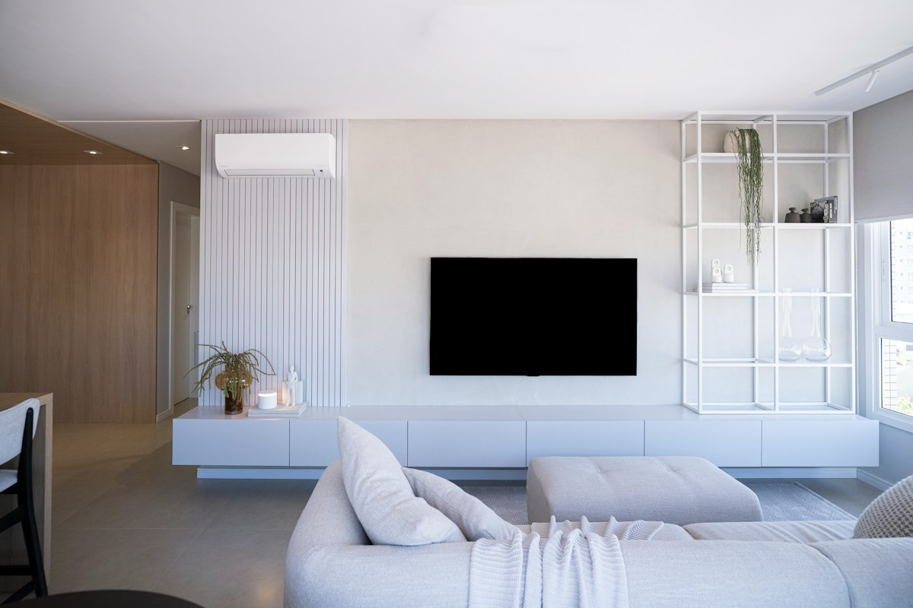

Bravia 8 II's Early Low Price Follows a Retail Calendar
A price floor set in mid-November is a scheduling decision by a brand and its chains, and the useful story is about which calendar Sony obeyed.

The date carries the information
The Verge reported on November 18, 2026 that Sony's Bravia 8 II OLED had reached its lowest recorded retail price. Black Friday was still ahead. That ordering is the story. A discount that lands before the holiday window arrives because someone scheduled it. The useful questions are then about margins and about model years, with the price cut serving as the evidence that a calendar was followed.
Two facts sit in the source. One is a product name; the other is a floor reached before the holiday. Everything else in this piece is reasoning about what that ordering usually means, and it is labeled as reasoning. That gap is the subject here, and the analysis should be read as an argument about calendars rather than a report about prices.
What a floor set this early implies
Holiday pricing in consumer electronics is negotiated months out. A brand that wants its name on a holiday promotion files an agreed price with each chain before the season opens. The chains then choose the week they publish it. A low reached in mid-November usually means the agreed number already sat below the previous street price. It also means someone decided that owning the news cycle on November 18 was worth more than holding the discount for the last week of November.
The second implication is less comfortable. Retail floors set before a holiday tend to hold. A deeper number is usually reserved for a different event, such as open-box clearance or the model that replaces this one. Buyers who wait for a deeper cut often find that the price held and the configuration changed. Screen size and bundle contents are where that change hides.
The strongest case against reading it as a signal
The strongest version of the opposite case is simple: this is one day on a price tracker, and trackers are noisy. A retailer can post a low for a single day because of a stock position or a card cashback offer. The number can be gone before anyone reads about it. On that reading, nothing here is scheduled. It is weather.
The objection is real but it does not fit the shape of the report. Weather does not arrive labeled as a new low on a product the brand is still selling elsewhere, with the holiday window in front of it. The source's own framing supports the slower reading: a new low, stated in advance of Black Friday. Its headline also calls the set impressive, which is a tester's word rather than a buyer's. Neither detail is what a one-day glitch produces.
The launch price was never a market price
Every record low inherits a number that was chosen rather than discovered. A launch price on a flagship OLED is set with the first markdown already planned. The seasonal calendar is fixed; the bill of materials is not. A floor that beats an invented high is a different event from a floor that beats a price the product actually held for months. The tracker cannot separate those two, and the same phrase covers both.
A reader can audit this without any inside knowledge, and the check takes one search. How long did the old number sit before it moved? Weeks of stability under the previous price make this week's floor meaningful. A number that has come down every month since spring makes this entry the least interesting one on the curve.
What the model-year calendar does to a flagship
The reason to care about an early floor is the succession calendar behind it. In large-panel television, a discounted flagship is often a set whose replacement has already been shown somewhere in the industry, even where no American announcement exists. A price that moves before the holiday is consistent with a channel clearing space for the next version. That is inference, and a buyer can test it in one search for what the brand has already unveiled abroad. Nothing in the source says a successor exists, and this piece is not claiming one.
Once the succession reading is admitted, the useful question is a different one. If a newer set is scheduled, price per inch stops being the comparison. It becomes what the buyer gets per dollar: panel type, the processor generation doing the upscaling, how long the platform promises updates. None of that is in this source. Without a successor's specification sheet, a discount cannot be judged as a bargain or as a fair price for aging hardware.
The numbers this brief does not carry
The record behind this piece contains one secondary headline and no figures. That is unusual for deal writing, and it changes what can responsibly be said. There is no price, no figure for the price this replaced, and no screen size on offer. No retailer is named, and no window is given for how long the floor holds. A paragraph supplying those figures would be fiction with a citation attached.
The gap is not decorative. Deal coverage earns its keep on the distance between an advertised low and a documented history. A tracking window shorter than the product's life on sale will produce false lows. Flagship televisions normally sell through several chains at once, so a low at one of them says nothing about the rest. Without the history and the seller, that phrase describes a spreadsheet rather than a market.
There is also the review hiding inside the headline. The source calls the set impressive, which tells a reader that its testers liked it and tells this piece nothing about why. Color accuracy, blooming control, motion handling and HDR headroom are separate judgments with separate methods. A deal headline carries the verdict and drops the evidence. That is how a mediocre panel gets a low price and a warm adjective in the same sentence.
Why this piece carries no score
This appears under a reviews pillar and it carries no score, for a procedural reason. A number in that field comes from hours on a bench: pattern sources, a colorimeter, a dark room, motion clips, a measured input lag. None of that happened here. Publishing a grade against a set this desk never measured is the confidence that made deal coverage untrustworthy in the first place.
This desk has no bench.
The honest product here is the analysis above plus a list of what a reader should demand before treating a floor as a verdict. Four data points, all public, all on the seller's own page: the price history, the exact model, the size, and the seller's end date. The list is short because it is a checklist rather than an essay. There is no purchase link in this piece either, and a reader should notice when a deal story has one and when it does not.
What a careful buyer checks after delivery
A discounted flagship needs three checks that no showroom performs. The first is dark-room content at low brightness while the panel is new, watched for uneven fields. The second is a walk around the panel with the lights off, where a bezel gap or a stressed corner shows itself. The third is the source list printed on the box, read against the devices actually connected to it.
Those checks are the part of a review that no price substitutes for. That is why a low number and a strong verdict get confused. An owner can run all three in an evening and knows more about their own room than any publication does from a bench. The limit is stated plainly: no measurement in this piece was made on this set, by this desk, at any hour.
What to do with a floor set early
Two things follow from reading the early floor as scheduled. First, the number in front of the holiday is the one to compare against, because a deeper cut later usually arrives in a different configuration. Second, the verification burden sits with the buyer for a few minutes. Pull the model's own page, read the size printed on it, and check whether the seller is the chain that posted the low.
One version of this article is useless, and it is worth naming. A room with afternoon sun on the screen has requirements no discount answers. So does a shelf with a width limit. In that house the price is a third-order variable. Afternoon sun is also why flat glass behaves differently on a showroom wall than it does at home. A showroom is never lit like a living room.